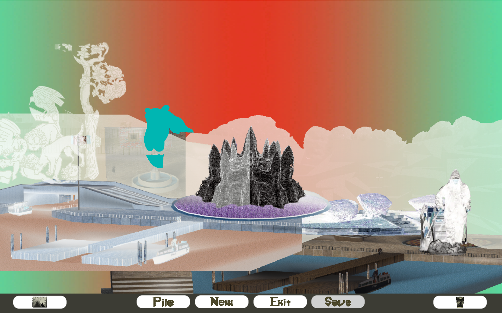

FEED:PROJECTS///////////new haven
FEED:PROJECTS///////////new haven
CityPile
A webGL collage software by FEED. Artwork by Aude Jomini and Eben Kling.
Shown in March 2023 at Spiazzi, Venezia, Italy.
Development, Code and Layout by Aude Jomini. Made with Unity.
See also the related project Pilemaker.
Make Piles of two cities... New Britain, USA & Venice, Italy!
Pile-on compositions by dragging things.... Right-Button drag to bring an object to front, Left-Button drag keeps the stacking order untouched.
Drag objects over the landscape icon to change the backdrop; drag them over the trash to delete, and keep on piling!
Try the "cloud" toggle, and you will alter how much fog is in your next pile. The "Save" button opens a new browser tab forall of your screenshots.
▮⧐ Click below to play on any computer web browser. ▮⧐ For mobiles, an app version is in development for '23.

